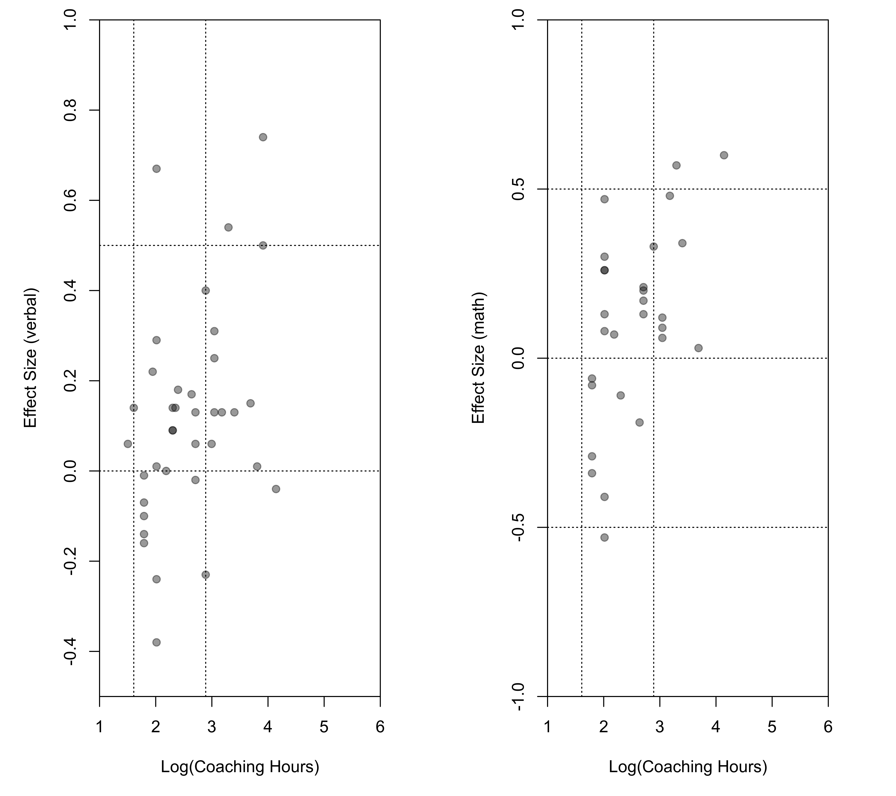

dat.kalaian1996.RdResults from studies examining the effectiveness of coaching on the performance on the Scholastic Aptitude Test (SAT).
dat.kalaian1996
The data frame contains the following columns:
| id | numeric | row (effect) id |
| study | character | study identifier |
| year | numeric | publication year |
| n1i | numeric | number of participants in the coached group |
| n2i | numeric | number of participants in the uncoached group |
| outcome | character | subtest (verbal or math) |
| yi | numeric | standardized mean difference |
| vi | numeric | corresponding sampling variance |
| hrs | numeric | hours of coaching |
| ets | numeric | study conducted by the Educational Testing Service (ETS) (0 = no, 1 = yes) |
| homework | numeric | assignment of homework outside of the coaching course (0 = no, 1 = yes) |
| type | numeric | study type (1 = randomized study, 2 = matched study, 3 = nonequivalent comparison study) |
The effectiveness of coaching for the Scholastic Aptitude Test (SAT) has been examined in numerous studies. This dataset contains standardized mean differences comparing the performance of a coached versus uncoached group on the verbal and/or math subtest of the SAT. Studies may report a standardized mean difference for the verbal subtest, the math subtest, or both. In the latter case, the two standardized mean differences are not independent (since they were measured in the same group of subjects). The number of hours of coaching (variable hrs), whether the study was conducted by the Educational Testing Service (variable ets), whether homework was assigned outside of the coaching course (variable homework), and the study type (variable type) may be potential moderators of the treatment effect.
The dataset was obtained from Table 1 in Kalaian and Raudenbush (1996). However, there appear to be some inconsistencies between the data in the table and those that were actually used for the analyses (see ‘Examples’).
Kalaian, H. A., & Raudenbush, S. W. (1996). A multivariate mixed linear model for meta-analysis. Psychological Methods, 1(3), 227--235. https://doi.org/10.1037/1082-989X.1.3.227
Wolfgang Viechtbauer wvb@metafor-project.org https://www.metafor-project.org
### copy data into 'dat' and examine data dat <- dat.kalaian1996 dat#> id study year n1i n2i outcome yi vi hrs ets #> 1 1 Alderman & Powers (A) 1980 28 22 verbal 0.22 0.0817 7.0 1 #> 2 2 Alderman & Powers (B) 1980 39 40 verbal 0.09 0.0507 10.0 1 #> 3 3 Alderman & Powers (C) 1980 22 17 verbal 0.14 0.1045 10.5 1 #> 4 4 Alderman & Powers (D) 1980 48 43 verbal 0.14 0.0442 10.0 1 #> 5 5 Alderman & Powers (E) 1980 25 74 verbal -0.01 0.0535 6.0 1 #> 6 6 Alderman & Powers (F) 1980 37 35 verbal 0.14 0.0557 5.0 1 #> 7 7 Alderman & Powers (G) 1980 24 70 verbal 0.18 0.0561 11.0 1 #> 8 8 Alderman & Powers (H) 1980 16 19 verbal 0.01 0.1151 45.0 1 #> 9 9 Evans & Pike (A) 1973 145 129 verbal 0.13 0.0147 21.0 1 #> 10 10 Evans & Pike (A) 1973 145 129 math 0.12 0.0147 21.0 1 #> 11 11 Evans & Pike (B) 1973 72 129 verbal 0.25 0.0218 21.0 1 #> 12 12 Evans & Pike (B) 1973 72 129 math 0.06 0.0216 21.0 1 #> 13 13 Evans & Pike (C) 1973 71 129 verbal 0.31 0.0221 21.0 1 #> 14 14 Evans & Pike (C) 1973 71 129 math 0.09 0.0219 21.0 1 #> 15 15 Laschewer 1986 13 14 verbal 0.00 0.1484 8.9 0 #> 16 16 Laschewer 1986 13 14 math 0.07 0.1484 8.9 0 #> 17 17 Roberts & Oppenheim (A) 1966 43 37 verbal 0.01 0.0503 7.5 1 #> 18 18 Roberts & Oppenheim (B) 1966 19 13 verbal 0.67 0.1366 7.5 1 #> 19 19 Roberts & Oppenheim (D) 1966 16 11 verbal -0.38 0.1561 7.5 1 #> 20 20 Roberts & Oppenheim (E) 1966 20 12 verbal -0.24 0.1342 7.5 1 #> 21 21 Roberts & Oppenheim (F) 1966 39 28 verbal 0.29 0.0620 7.5 1 #> 22 22 Roberts & Oppenheim (G) 1966 38 25 math 0.26 0.0669 7.5 1 #> 23 23 Roberts & Oppenheim (H) 1966 18 13 math -0.41 0.1352 7.5 1 #> 24 24 Roberts & Oppenheim (I) 1966 19 13 math 0.08 0.1297 7.5 1 #> 25 25 Roberts & Oppenheim (J) 1966 37 22 math 0.30 0.0732 7.5 1 #> 26 26 Roberts & Oppenheim (K) 1966 19 11 math -0.53 0.1482 7.5 1 #> 27 27 Roberts & Oppenheim (L) 1966 17 13 math 0.13 0.1360 7.5 1 #> 28 28 Roberts & Oppenheim (M) 1966 20 12 math 0.26 0.1344 7.5 1 #> 29 29 Roberts & Oppenheim (N) 1966 20 13 math 0.47 0.1303 7.5 1 #> 30 30 Zuman (B) 1988 16 17 verbal 0.13 0.1216 24.0 0 #> 31 31 Zuman (B) 1988 16 17 math 0.48 0.1248 24.0 0 #> 32 32 Burke (A) 1986 25 25 verbal 0.50 0.0825 50.0 0 #> 33 33 Burke (B) 1986 25 25 verbal 0.74 0.0855 50.0 0 #> 34 34 Coffin 1987 8 8 verbal -0.23 0.2517 18.0 0 #> 35 35 Coffin 1987 8 8 math 0.33 0.2534 18.0 0 #> 36 36 Davis 1985 22 21 verbal 0.13 0.0933 15.0 0 #> 37 37 Davis 1985 22 21 math 0.13 0.0933 15.0 0 #> 38 38 Frankel 1960 45 45 verbal 0.13 0.0445 30.0 0 #> 39 39 Frankel 1960 45 45 math 0.34 0.0451 30.0 0 #> 40 40 Kintisch 1979 38 38 verbal 0.06 0.0527 20.0 0 #> 41 41 Whitla 1962 52 52 verbal 0.09 0.0385 10.0 1 #> 42 42 Whitla 1962 52 52 math -0.11 0.0385 10.0 1 #> 43 43 Curran (A) 1988 21 17 verbal -0.10 0.1066 6.0 0 #> 44 44 Curran (A) 1988 21 17 math -0.08 0.1065 6.0 0 #> 45 45 Curran (B) 1988 24 17 verbal -0.14 0.1007 6.0 0 #> 46 46 Curran (B) 1988 24 17 math -0.29 0.1015 6.0 0 #> 47 47 Curran (C) 1988 20 17 verbal -0.16 0.1092 6.0 0 #> 48 48 Curran (C) 1988 20 17 math -0.34 0.1104 6.0 0 #> 49 49 Curran (D) 1988 20 17 verbal -0.07 0.1089 6.0 0 #> 50 50 Curran (D) 1988 20 17 math -0.06 0.1089 6.0 0 #> 51 51 Dear 1958 60 526 verbal -0.02 0.0186 15.0 1 #> 52 52 Dear 1958 60 526 math 0.21 0.0186 15.0 1 #> 53 53 Dyer 1953 225 193 verbal 0.06 0.0096 15.0 1 #> 54 54 Dyer 1953 225 193 math 0.17 0.0097 15.0 1 #> 55 55 French (B) 1955 110 158 verbal 0.06 0.0154 4.5 1 #> 56 56 French (C) 1955 161 158 math 0.20 0.0126 15.0 1 #> 57 57 FTC 1978 192 684 verbal 0.15 0.0067 40.0 0 #> 58 58 FTC 1978 192 684 math 0.03 0.0067 40.0 0 #> 59 59 Keefauver 1976 16 25 verbal 0.17 0.1029 14.0 0 #> 60 60 Keefauver 1976 16 25 math -0.19 0.1029 14.0 0 #> 61 61 Lass 1961 38 82 verbal 0.02 0.0385 NA 1 #> 62 62 Lass 1961 38 82 math 0.10 0.0386 NA 1 #> 63 63 Reynolds & Oberman 1987 93 47 verbal -0.04 0.0320 63.0 0 #> 64 64 Reynolds & Oberman 1987 93 47 math 0.60 0.0333 63.0 0 #> 65 65 Teague 1992 10 15 verbal 0.40 0.1699 18.0 0 #> 66 66 Zuman (A) 1988 21 34 verbal 0.54 0.0797 27.0 0 #> 67 67 Zuman (A) 1988 21 34 math 0.57 0.0800 27.0 0 #> homework type #> 1 1 1 #> 2 1 1 #> 3 1 1 #> 4 1 1 #> 5 1 1 #> 6 1 1 #> 7 1 1 #> 8 1 1 #> 9 1 1 #> 10 1 1 #> 11 1 1 #> 12 1 1 #> 13 1 1 #> 14 1 1 #> 15 0 1 #> 16 0 1 #> 17 0 1 #> 18 0 1 #> 19 0 1 #> 20 0 1 #> 21 0 1 #> 22 0 1 #> 23 0 1 #> 24 0 1 #> 25 0 1 #> 26 0 1 #> 27 0 1 #> 28 0 1 #> 29 0 1 #> 30 1 1 #> 31 1 1 #> 32 1 2 #> 33 1 2 #> 34 0 2 #> 35 0 2 #> 36 0 2 #> 37 0 2 #> 38 0 2 #> 39 0 2 #> 40 1 2 #> 41 1 2 #> 42 1 2 #> 43 0 3 #> 44 0 3 #> 45 0 3 #> 46 0 3 #> 47 0 3 #> 48 0 3 #> 49 0 3 #> 50 0 3 #> 51 1 3 #> 52 1 3 #> 53 1 3 #> 54 1 3 #> 55 1 3 #> 56 1 3 #> 57 0 3 #> 58 0 3 #> 59 0 3 #> 60 0 3 #> 61 1 3 #> 62 1 3 #> 63 l 3 #> 64 l 3 #> 65 0 3 #> 66 1 3 #> 67 1 3# \dontrun{ ### load metafor package require(metafor) ### check ranges range(dat$yi[dat$outcome == "verbal"]) # -0.35 to 0.74 according to page 230#> [1] -0.38 0.74#> [1] -0.53 0.60### comparing this with Figure 1 in the paper reveals some discrepancies par(mfrow=c(1,2), mar=c(5,4,1,1)) plot(log(dat$hrs[dat$outcome == "verbal"]), dat$yi[dat$outcome == "verbal"], pch=19, xlab="Log(Coaching Hours)", ylab="Effect Size (verbal)", xlim=c(1,6), ylim=c(-0.5,1), xaxs="i", yaxs="i") abline(h=c(-0.5,0,0.5), lty="dotted") abline(v=log(c(5,18)), lty="dotted") plot(log(dat$hrs[dat$outcome == "math"]), dat$yi[dat$outcome == "math"], pch=19, xlab="Log(Coaching Hours)", ylab="Effect Size (math)", xlim=c(1,6), ylim=c(-1.0,1), xaxs="i", yaxs="i")### construct variance-covariance matrices assuming rho = 0.66 vcalc <- function(v, rho) { S <- diag(sqrt(v), nrow=length(v), ncol=length(v)) R <- matrix(rho, nrow=length(v), ncol=length(v)) diag(R) <- 1 S %*% R %*% S } V <- lapply(split(dat$v, dat$study), vcalc, rho=0.66) V <- bldiag(V, order=dat$study) ### fit multivariate random-effects model res <- rma.mv(yi, V, mods = ~ outcome - 1, random = ~ outcome | study, struct="UN", data=dat, digits=3) res#> #> Multivariate Meta-Analysis Model (k = 67; method: REML) #> #> Variance Components: #> #> outer factor: study (nlvls = 47) #> inner factor: outcome (nlvls = 2) #> #> estim sqrt k.lvl fixed level #> tau^2.1 0.012 0.111 29 no math #> tau^2.2 0.003 0.051 38 no verbal #> #> rho.math rho.vrbl math vrbl #> math 1 - 20 #> verbal -1.000 1 no - #> #> Test for Residual Heterogeneity: #> QE(df = 65) = 72.261, p-val = 0.251 #> #> Test of Moderators (coefficients 1:2): #> QM(df = 2) = 18.090, p-val < .001 #> #> Model Results: #> #> estimate se zval pval ci.lb ci.ub #> outcomemath 0.138 0.043 3.171 0.002 0.053 0.223 ** #> outcomeverbal 0.117 0.034 3.459 <.001 0.051 0.183 *** #> #> --- #> Signif. codes: 0 ‘***’ 0.001 ‘**’ 0.01 ‘*’ 0.05 ‘.’ 0.1 ‘ ’ 1 #>#> #> Hypothesis: #> 1: outcomemath - outcomeverbal = 0 #> #> Results: #> estimate se zval pval #> 1: 0.021 0.049 0.427 0.669 #> #> Test of Hypothesis: #> QM(df = 1) = 0.183, p-val = 0.669 #>### log-transform and mean center the hours of coaching variable dat$loghrs <- log(dat$hrs) - mean(log(dat$hrs), na.rm=TRUE) ### fit multivariate model with log(hrs) as moderator res <- rma.mv(yi, V, mods = ~ outcome + outcome:loghrs - 1, random = ~ outcome | study, struct="UN", data=dat, digits=3)#> Warning: Rows with NAs omitted from model fitting.res#> #> Multivariate Meta-Analysis Model (k = 65; method: REML) #> #> Variance Components: #> #> outer factor: study (nlvls = 46) #> inner factor: outcome (nlvls = 2) #> #> estim sqrt k.lvl fixed level #> tau^2.1 0.015 0.123 28 no math #> tau^2.2 0.001 0.037 37 no verbal #> #> rho.math rho.vrbl math vrbl #> math 1 - 19 #> verbal -1.000 1 no - #> #> Test for Residual Heterogeneity: #> QE(df = 61) = 68.018, p-val = 0.251 #> #> Test of Moderators (coefficients 1:4): #> QM(df = 4) = 23.634, p-val < .001 #> #> Model Results: #> #> estimate se zval pval ci.lb ci.ub #> outcomemath 0.101 0.049 2.085 0.037 0.006 0.197 * #> outcomeverbal 0.110 0.035 3.164 0.002 0.042 0.178 ** #> outcomemath:loghrs 0.170 0.073 2.339 0.019 0.028 0.312 * #> outcomeverbal:loghrs 0.049 0.046 1.069 0.285 -0.041 0.139 #> #> --- #> Signif. codes: 0 ‘***’ 0.001 ‘**’ 0.01 ‘*’ 0.05 ‘.’ 0.1 ‘ ’ 1 #>### fit model with tau2 = 0 for outcome verbal (which also constrains rho = 0) res <- rma.mv(yi, V, mods = ~ outcome + outcome:loghrs - 1, random = ~ outcome | study, struct="UN", tau2=c(NA,0), data=dat, digits=3)#> Warning: Rows with NAs omitted from model fitting.res#> #> Multivariate Meta-Analysis Model (k = 65; method: REML) #> #> Variance Components: #> #> outer factor: study (nlvls = 46) #> inner factor: outcome (nlvls = 2) #> #> estim sqrt k.lvl fixed level #> tau^2.1 0.021 0.145 28 no math #> tau^2.2 0.000 0.000 37 yes verbal #> #> rho.math rho.vrbl math vrbl #> math 1 - 19 #> verbal 0.000 1 yes - #> #> Test for Residual Heterogeneity: #> QE(df = 61) = 68.018, p-val = 0.251 #> #> Test of Moderators (coefficients 1:4): #> QM(df = 4) = 23.340, p-val < .001 #> #> Model Results: #> #> estimate se zval pval ci.lb ci.ub #> outcomemath 0.107 0.051 2.100 0.036 0.007 0.206 * #> outcomeverbal 0.114 0.034 3.395 <.001 0.048 0.180 *** #> outcomemath:loghrs 0.188 0.076 2.466 0.014 0.039 0.337 * #> outcomeverbal:loghrs 0.060 0.044 1.358 0.175 -0.027 0.147 #> #> --- #> Signif. codes: 0 ‘***’ 0.001 ‘**’ 0.01 ‘*’ 0.05 ‘.’ 0.1 ‘ ’ 1 #># }